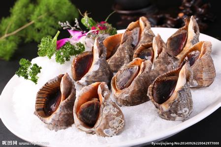

常见食物搭配禁忌大全
搭配禁忌大全。1、猪肉+菱角，会引起肚子痛；2、白酒+柿子，会引起中毒；3、牛肉+粟子，会引起呕吐；4、洋葱+蜂蜜，会伤眼睛；5、羊肉+西瓜，会伤元气。
常见蔬菜禁忌
1、萝卜（莱菔、芦菔）
严禁与橘子同食， 否则易患甲状腺肿;忌与胡萝卜、何首乌、地黄同食;服人参时也应忌食。
2、甘薯（红薯、白薯、地瓜、山芋）不能与柿子同食，两者相聚后会形成胃柿石，引起胃胀、腹痛、呕吐、严重时可导致胃出血等，危及生命;也不宜与香蕉同食。
3、韭菜（起阳草、懒人菜）不可与菠菜同食，二者同食有滑肠作用，易引起腹泻;不可与蜂蜜同食，同食易引起心痛;不可与牛肉同食，同食令人发热动火。这里要特别提醒农村的朋友，炒蔬菜时注意不要放韭菜，况且色泽搭配也不科学。
4、茄子（落苏、昆仑紫瓜）忌与黑鱼、蟹同食，同食有损肠胃，并且，一般过老熟的茄子不宜食，易引起中毒。
5、菠菜（菠棱莱、赤根菜）不宜与豆腐同食，易使人缺钙，当然亦忌与韭菜同食。
6、南瓜（番瓜、倭瓜、饭瓜）不可与富含维生素C的蔬菜、水果同食;不可与羊肉同食，否则易发生黄疸和脚气病。
7、竹笋（笋）不宜与豆腐同食，同食易生结石;不可与鹧鸪肉同食，同食令人腹胀;不可与糖同食;不宜与羊肝同食。
8、茭白（茭瓜、茭笋）不宜与豆腐同食，否则易形成结石。
9、芹菜（芹、旱芹、药芹、香芹）忌同醋食，否则易损伤牙齿;不宜与黄瓜同食。
10、芥菜（护生草、菱角莱）忌与鲫鱼同食，否则易引发水肿。
常见不可搭配的食物

1、猪肉+菱角，会引起肚子痛；
2、白酒+柿子，会引起中毒；
3、牛肉+粟子，会引起呕吐；
4、洋葱+蜂蜜，会伤眼睛；
5、羊肉+西瓜，会伤元气；
6、萝卜+木耳，会引起皮炎；
7、狗肉+绿豆，会引起中毒；
8、豆腐+蜂蜜，会引起耳聋；
9、兔肉+芹菜，会引起脱皮；
10、马铃薯+香蕉，面部会生斑；
11、鸡肉+芹菜，会伤元气；
12、香蕉+芋头，会引起腹胀；
13、鹅肉+鸡蛋，会伤元气；
14、花生+黄瓜，会伤身；
15、甲鱼+苋菜，会中毒；
16、红薯+柿子，会引起结石病；
17、鲤鱼+甘草，会引起中毒；
18、螃蟹+柿子，会引起腹泻；
19、豆浆+鸡蛋，失去营养素；
20、豆浆+红糖，降低蛋白质营养价值；
21、米汤+奶粉，破坏维生素A；
22、开水+蜂蜜，破坏营养素；
23、小葱+豆腐，影响人体对钙的吸收；
24、牛奶+果汁，不利于消化吸收；
25、萝卜+水果，可致甲状腺肿大；
26、海味+水果，影响蛋白质吸收；
27、啤酒+海味，引发痛风症；
28、肉类+茶饮，易产生便秘；
29、白酒+胡萝卜，肝脏易中毒；
30、山楂+胡萝卜，维生素C遭到破坏；
31、咸鱼+西红柿（或香蕉+乳酸饮料），产生强致癌物；
32、对虾+维生素C，可致砷中毒。
海鲜禁忌
许多人偏爱海鲜，追求的是其鲜美的味道、滑嫩的口感，大家在品尝之余，得留个心眼，若在细节上稍不注意，最后你只会感叹海鲜让你欢喜让你忧！
海鲜煮不熟含有细菌海鲜中的病菌主要是副溶血性弧菌等，耐热性比较强，80℃以上才能杀灭。除了水中带来的细菌之外，海鲜中还可能存在寄生虫卵以及加工带来的病菌和病毒污染。一般来说，在沸水中煮4-5分钟才算彻底杀菌。因此，在吃“醉蟹”、“生海胆”、“酱油腌海鲜”之类不加热烹调的海鲜一定要慎重，吃生鱼片的时候也要保证鱼的新鲜和卫生。
死贝类病菌毒素多多贝类本身带菌量比较高，蛋白质分解又很快，一旦死去便大量繁殖病菌、产生毒素，同时其中所含的不饱和脂肪酸也容易氧化酸败。
不新鲜的贝类还会产生较多的胺类和自由基，对人体健康造成威胁。选购活贝之后也不能在家存放太久，要尽快烹调。过敏体质的人尤其应当注意，因为有时候过敏反应不是因为海鲜本身，而是在海鲜蛋白质分解过程中的物质导致的。
海鲜啤酒同吃惹痛风在吃海鲜时最好别饮用啤酒。虾、蟹等海产品在人体代谢后会形成尿酸，而尿酸过多会引起痛风、肾结石等病症。如果大量食用海鲜的同时，再饮用啤酒，就会加速体内尿酸的形成。所以，在大量食用海鲜的时候，千万别喝啤酒，否则会对身体产生不利影响。
海鲜水果同吃会腹痛鱼、虾、蟹等海产品含有丰富的蛋白质和钙等营养素。而水果中含有较多的鞣酸，如果吃完海产品后，马上吃水果，不但影响人体对蛋白质的吸收，海鲜中的钙还会与水果中的鞣酸相结合，形成难溶的钙，会对胃肠道产生刺激，甚至引起腹痛、恶心、呕吐等症状。最好间隔2小时以上再吃。
吃海鲜后喝茶长结石吃完海鲜不宜喝茶的道理与不宜吃水果的原因类似。因为茶叶中也含有鞣酸，同样能与海鲜中的钙形成难溶的钙。
在食用海鲜前或后吃海鲜，都会增加钙与鞣酸相结合的机会。因此，在吃海鲜时最好别喝茶。同理，也是最好间隔2小时以上。
冰鲜虾不可白灼着吃任何海鲜都只有在高度新鲜的状态下才能做成清蒸、白灼之类的菜肴。水产海鲜与肉类不同，它们体内带有很多耐低温的细菌，而且蛋白质分解特别快。如果放在冰箱里多时，虾体的含菌量增大，蛋白质也已经部分变性，产生了胺类物质，无论怎么样都达不到活虾的口感、风味和安全性，当然也就不适合白灼的吃法了。不过，冰鲜的虾可以高温烹炒或煎炸，同时也能呈现出美味噢。
海鲜维c同食会中毒多种海产品，如虾、蟹、蛤、牡蛎等，体内均含有化学元素砷。一般情况下含量很小，但日益严重的环境污染可能使这些动物体内砷的含量达到较高水平。虾体内所含砷的化合价是五价，一般情况下，五价砷对人体是没有害处的。理论上讲，高剂量的维生素c（一次性摄入维生素c超过500毫克）和五价砷经过复杂的化学反应，会转变为有毒的三价砷（即我们常说的“砒霜”），当三价砷达到一定剂量时可导致人体中毒。
据专业人士解释，一次性摄入50个中等大小的苹果或30个梨或10个橙子或生吃3斤以上的绿叶蔬菜，才会大剂量地摄入维生素c。如果经过加热烹调过程，食物中的维生素c还会大打折扣。因此，在吃海产品的同时食用水果或青菜，只要不超过上述的量是没有危险的。金属类元素容易沉积在海鲜的头部，所以尽量不要吃虾头、鱼头。
打包来的海鲜要冷藏如果海鲜已经高温彻底烹熟，那么只需马上放入冷藏室，下餐加热后即可食用。如果海鲜并未经过充分加热，但已经死去，那么应当放进冷藏室，下一餐之前化冻，然后彻底加热烹熟，不要再贪恋生鲜口感。由于海鲜类食品的蛋白质质地细腻，分解很快，拿回家之后应当在一天之内食完，不要长时间存放。
五类人不得常食海鲜1、患有痛风症、高尿酸血症和关节炎的人不宜吃海鲜，因海鲜嘌呤过高，易在关节内沉积尿酸结晶加重病情。
2、过敏体质的人应慎食海鲜，因为除了避免食用特定的过敏原之外，海鲜过敏并没有很好的预防方法。富含组胺的红肉鱼也要少吃。
3、孕妇和乳母应当少吃海鲜，因为目前我国海产品的污染状况十分严重，特别是含汞量普遍超标，而汞可以影响胎儿和婴儿的大脑和神经发育。
4、甲状腺机能亢进者应少吃海鲜，因为含碘较多，可加重病情。
5、平日吃冷凉食物容易腹泻和胃肠敏感的人应当少吃海鲜，以免发生腹痛、腹泻的状况。
不可多食的食物
荔枝：荔枝是水果中的珍品，色美味甘，营养丰富。中医认为，荔枝备五行之粹美，可以通神、益智、健气。不过荔枝中含有一种可以降低血糖的物质，吃得越多，血糖越低，如不及时治疗会导致死亡。
日啖荔枝三百颗1.荔枝不能当饭吃，一天不要超过半斤，还要在饭后半小时吃。
2.如果将荔枝连皮浸入淡盐水中，放入冰箱里冰后再吃，不但可以避免上火，口感也更好。
3.有个偏方：荔枝壳泡水喝，可以解荔枝毒性。
豆浆：豆浆是公认的健康食品。在这个DIY的年代，为了卫生我们会选择自己磨制豆浆。需注意的是：生豆浆里含有一种皂毒素，会使人恶心、呕吐、腹痛、腹泻。豆浆还是种善于伪装的“毒药”。它在真正被煮沸消失毒性前先会“假沸”。即当豆浆加热到80°C时，会出现泡沫，且随着温度增高泡沫越来越多，形似沸腾，其实并没真的烧开，毒素依然存在。煮豆浆时中途添加生豆浆。煮豆浆时先用旺火，当出现泡沫上溢时，再改用小火，直到泡沫逐渐消失为止。从外面买回的豆浆，也最好再次烧开。
白果：这种很有禅意的果实不仅鲜嫩，还有美容和药用价值。但核仁中含有对皮肤及胃肠黏膜有刺激作用的银杏酸和银杏酚。中毒后先有恶心、呕吐、腹痛、腹泻、食欲不振，随即开始烦躁不安、恐惧怪叫，逐渐四肢无力，甚至发生呼吸困难、肺水肿和昏迷。接触核仁和肉质外皮还可能引起皮炎。白果不能生吃，熟的一天最多吃4～5颗，吃10～50颗就有中毒危险了。
1.吃的时候去除果仁中绿色的胚芽。避免接触果核。
2.一旦出现中毒症状，只要用白果壳30g煎水服就成了。
桑葚：历代本草均对桑葚极其推崇，认为有滋阴益肾、养血生津的功效。但桑葚所含的挥发油对消化道有刺激作用，会抑制肠道内的多种消化酶，造成细胞中毒死亡，甚至发生出血性肠炎和鼻出血。也有人对桑葚过敏，出现腹泻及面目红赤，耳内、鼻腔内、上眼睑内、咽喉部肿胀瘙痒。贪嘴：桑葚性寒，不要多吃，脾胃虚寒、大便稀薄者更要注意适量。
果仁：果仁是零食中的主力，但很多果仁在炮制前是有毒的。容易中毒的果仁有苦桃仁、枇杷仁、亚麻仁、杨梅仁、李子仁、樱桃仁、苹果仁等，它们都含可以杀死细胞的氢氰酸。即使是甜杏仁，一次吃多了也一样有中毒表现。
生吃1.不吃没经处理的果仁。既然超市里有那么多甜的咸的成品果仁，我们就支持一下，不要自己DIY了。
2.实在想感受生活，一定要将果仁去皮去尖，热水泡上它一天，煮的时候不加盖，让有毒的氢氰酸充分挥发。
黄花菜：黄花菜又名萱草，听起来很美，但含秋水仙碱毒素。秋水仙碱本身无毒，但进入人体后被氧化就成了剧毒，会对肠胃及呼吸系统产生强烈的刺激。一般是嗓子发干、恶心、腹泻，甚至产生血便。直接烹炒。
1.秉承老传统，晒干发好的黄花是绝对安全的。
2.一定要吃鲜的，就要有耐心。秋水仙碱溶于水，吃之前用开水焯一下，再用凉水浸泡两小时以上，就不会中毒了。
菠菜：营养丰富，是大力水手的最爱。但菠菜里含大量的草酸钾，遇钙可以形成不溶于水的草酸钙。草酸钾能进入血液循环，顺血流一路寻找我们体内的血钙来结合，一路沉淀，沉哪儿伤哪儿：在脑里沉淀则伤脑，在心脏沉淀则伤心，在肾脏沉淀则伤肾，在消化道里沉淀就妨碍人体对钙的吸收。血钙少了，骨钙还会自动跑出来相会，我们辛苦补的钙就这样成就了它们的姻缘。
1.草酸钾溶于水，所以喝菠菜汤很危险。
2.炒菠菜也不妥，有油的包裹，草酸钾不容易溶解在菜汤中，只好随着菠菜吃进肚里，所以草酸慢性中毒的机会较大。
最安全又有营养的吃法是：将菠菜用水煮后，把汤倒掉，再凉拌着吃。吃菠菜后多喝些水，也可减少草酸钙结合的机会。
扁豆：扁豆是一年四季都能吃到的蔬菜，它本身含有两种毒素：红细胞凝集素和皂素。它们对胃肠道有刺激性。中毒后会上吐下泻，甚至可以使人体红细胞发生凝集和溶血。有些人将它视同荷兰豆：先在开水里焯一下，再大火爆炒。这样确实颜色好看，而且口感爽脆，但极易中毒。
大火爆炒1.扁豆是个没有形象的菜，必须煮熟焖透。即使用油炒过后还要加适量的水，用小火焖10多分钟，直到看起来软软丑丑的，吃起来没有豆腥味才成。
2.买豆角时一定挑嫩的，老扁豆毒性强。没耐性的话东北油豆干脆别吃，因为想把这种“大粒扁豆”煮透去毒非常不易。
3.烹制前要把扁豆两头和荚丝择掉，这里毒性最大，最好先在水中泡15分钟。
黄鳝：黄鳝一直被认为是补益佳品。明代医药家李时珍认为黄鳝特别适合女性进补，可益气、补虚损。鳝鱼体内的组胺酸是其鲜味的主要成分，可在死后组胺酸迅速分解为有毒的组胺。组胺中毒会出现皮疹、头晕、呕吐、腹泻等，严重时可使人因中毒而死亡。
死鳝入馔。黄鳝必须买鲜活的。因为黄鳝死后24小时，每100克死鳝组胺含量可达200毫克，已经从大补到大毒了。
鲜海蜇：老醋蛰头不仅好吃，而且很符合营养标准。但海蛰含有大量的致病菌——副溶血性孤菌，容易引发急性胃肠炎，其症状酷似痢疾。此外，还会出现发热、脱水、酸中毒、休克、神志不清等中毒症状。像对一般拌凉菜那样的虎狼拌法。副溶血性孤菌对酸最敏感，一般在醋中浸5分钟就会死亡，在淡水中也难存活。因此首先要将海蛰放在清水里，泡上两天，再反复冲洗。切好后用醋浸泡5分钟以上，拍上些蒜泥，这样就足以全部杀死孤菌。
西洋参：西洋参一向因为不会温燥上火，有一定的抗疲劳、抗缺氧和提神醒脑作用，被视为补药中之上品，有些人随身携带含片，以撑过我们狗一样的上班生涯。虽然西洋参无毒但性凉，服太多会出现畏寒、体温下降、食欲不振、腹痛腹泻，有的人还会发生痛经和经期延长。
禁补自作主张服参最好听大夫的，并做到少量多次，每次以2～8克为宜。特别是在感冒咳嗽或急性感染时不宜服用。
患病人群需注意
冠心病忌红烧肉
红烧肉美味可口，是节日期间人们常吃的一道菜肴，但其因为含较高的饱和脂肪酸、胆固醇会使血脂升高、血液黏稠度增高，易于形成血栓，所以冠心病患者慎吃。
慢性呼吸道疾病患者忌凉此类患者如若食用寒凉食物，气管、支气管受到刺激，容易诱发上感、支气管炎、哮喘等呼吸道疾病。
胃病患者忌暴饮暴食暴饮暴食对有胃病的人来说，无疑是雪上加霜，会使原有的胃病更为严重。
青光眼患者忌饮料青光眼患者不可一次大量饮用饮料，因为饮料会使血液被稀释，血浆渗透压降低，房水增加，眼压升高，加重青光眼病情。
脉管炎患者忌烟脉管炎患者若吸烟，会使血小板黏度和聚集性增加，并能抑制纤维蛋白溶解，使血液处于高凝状态，从而使病症加剧。
胆道疾病患者忌油节日期间，若大景食用油腻（尤其是动物脂肪）会加重胆道的负担，有诱发急性胆囊炎的可能。
肝病患者忌酒肝病患者饮酒，会直接伤害肝细胞，甚至使肝细胞变性或坏死，导致病情进一步恶化。
风寒感冒者忌螃蟹螃蟹虽然含有丰富的营养，有独特的风味，但是由于它性寒，吃蟹会加重原有风寒症状。
痛风患者忌喝肉汤、吃动物内脏每年的新春佳节期间，都是痛风病的高发季节，原因在于，春节期间北京人喜欢吃涮羊肉，酒足饭饱后喝一碗涮锅后的肉汤味道确实鲜美，但由于肉汤中的嘌呤含量较高，往往会诱发痛风。另外，羊杂嘌呤含量也是相当高，痛风者应远离它。
上火者忌橘子橘子是含热量较大的水果，一次性过多食用，不论大人还是孩子，都会导致“上火”，出现口舌干燥、咽喉肿痛等症状。因此，尽管橘子是春节期间的应季水果，若已“上火”者应忌食。
出血性疾病患者忌海鱼血小板减少、血友病、维生素K缺乏等出血性疾病患者要少吃或不吃海鱼，因为鱼肉中所含的20碳5烯酸，可抑制血小板凝集，从而加重出血性疾病患者的出血症状。
癌症患者忌吃肥腻、辛辣、燥热刺激性食品如肥肉、辣椒、葱、蒜、韭菜、花椒、辣椒、桂皮、烟、酒、煎炸、熏制食品、狗肉、羊肉、蚕蛹、虾、蟹、螺、蚌等食物。这些食物易使癌细胞扩散。
糖尿病者忌喝粥过节期间，吃完了大鱼大肉，很多人就想喝粥清清肠胃。但糖尿病患者喝粥要比吃同量干饭，血糖明显升高。因此，糖尿病患者千万别喝粥。原因就是大米、小米、玉米中的淀粉并不溶于水，只有经加热后才能释放出来，加热时间越长，释放出来的淀粉越多。粥，显然比干饭加热时间长，而且粥比干饭放入的水也多很多，淀粉的溶解量也大。因此喝米粥会对糖尿病人的健康造成严重的损害。如果不习惯吃干饭，不如将干饭泡水吃，干饭中的淀粉还未来得及释放出来，便被消化了，这就避免了血糖的升高。
办公室人群需注意
办公室族由于忙于工作，往往忽视了健康饮食的原则，在不知不觉间触犯了一些饮食禁忌，长久下来身体健康便受到损害。
饮食禁忌1：保温杯泡茶茶叶中含有大量的鞣酸、茶碱、茶香油和多种维生素，用80℃左右的水冲泡比较适宜，如果用保温杯长时间把茶叶浸泡在高温的水中，就如同用微水煎煮一样，会使茶叶中的维生素全遭破坏，茶香油大量挥发，鞣酸、茶碱大量渗出。这样不仅降低了茶叶的营养价值，减少了茶香，还使有害物质增多。
饮食禁忌2：不吃早餐严重伤胃，使你无法精力充沛地工作，而且还容易“显老”。德国埃朗根大学研究人员在对7000个男女对象的长期跟踪后发现，习惯不吃早餐的人占到了40%，而他们的寿命比其余60%的人平均缩短了2。5岁。而另一所大学在一次对80-90岁老年人的研究中发现，他们长寿的共同点之一是：每天吃一顿丰盛的早餐。
饮食禁忌3：爱喝咖啡美国医学家研究发现，一个人每天喝5杯或更多咖啡，其患心脏病的几率比不喝者高两倍，且嗜咖啡年限越长，饮量越多，患心脏病的可能性越大。通过对858位45-69岁首次患心肌梗死的人的调查证明，每天喝5杯以上咖啡者患病的危险增加了70%。
饮食禁忌4：饮水不足办公室一族在工作中，由于工作时精神高度集中，很容易忘记喝水，造成体内水分补给不足。体内水分减少，血液浓缩及黏稠度增大，容易导致血栓形成，诱发脑血管及心血管疾病，还会影响肾脏代谢的功能。
冷冻食物禁忌大全
存放食物不宜过满、过紧，要留有空隙，以利冷空气对流，减轻机组负荷，延长使用寿命，节省电量。
食物不可生熟混放在一起，以保持卫生。按食物存放时间、温度要求，合理利用箱内空间，不要把食物直接放在蒸发器表面上，要放在器皿里，以免冻结在蒸发器上，不便取出。
鲜鱼、肉等食品不可以不作处理就放进冰箱。鲜鱼、肉要用塑料袋封装，在冷冻室贮藏。蔬菜、水果要把外表面水分擦干，放入箱内最下面，以零上温度贮藏为宜。
不能把瓶装液体饮料放进冷冻室内，以免冻裂包装瓶。应放在冷藏箱内或门档上，以4℃左右温度贮藏为最好。
存贮食物的电冰箱不宜同时储藏化学药品。
香蕉:在12℃以下的环境贮存，会使其发黑腐烂。
鲜荔枝:在0度以下的环境中放上一天，其表皮就会变黑，果肉就会变味。
黄瓜:在O℃的冰箱内放三天，表皮会呈水浸状，失去其持有的风味。
西红柿:经冷冻，局部或全都果实会呈水浸状软烂，表现出褐色的圆斑。
面包:面包在烘烤过程中，面粉中的淀粉直链分部已经老化，这就是面包产生弹性和柔软结构的原因。随着放置时间的延长，面包中的支链淀粉的直链部分慢慢缔合，而使柔软的面包逐渐变硬，这种现象叫“变陈”。“变陈”的速度与温度有关。在低温时（冷冻点以上）老化较快，而面包放冰箱中，变硬的程度来得更快。
黄瓜青椒:黄瓜、青椒在冰箱中久存，会出现冻“伤”——变黑、变软、变味。黄瓜还会长毛发粘。因为冰箱里存放的温度一般为4℃至6℃左右，而黄瓜贮存适宜温度为10℃至12℃，青椒为7℃至8℃。故不宜久存。
火腿:若在冰箱中贮存，其中的水分极易结冰，从而促进了火腿内脂肪的氧化作用，火腿质量就会明显下降，使保持期限大大缩短。
巧克力:夏天室内温度一般在25℃左右，这时如果把巧克从冰箱中取出，巧克力表面就会立即结霜，时间一长，巧克力就会因发潮而霉变或生虫。
叶子菜:最好不要挨着冰箱放，否则会烂的。
面包在烘烤过程中，面粉中的直链淀粉部分已经老化，这就是面包产生弹性和柔软结构的原因。随着防止实践的演唱，面包中的直链淀粉部分的直链慢慢缔合，而使柔软的面包逐渐变硬，社中现象叫做“变陈”。变陈的速度与温度有关。在低温室变硬较快，面包放在冰箱中药比放在室温变硬的速度来的快，所以，如果短时间存放应将面包放在室温下，防止面包变硬。
中药不宜放在冰箱里，药材放入冰箱内，和其他食物混放时间一长，不但各种细菌容易侵入药材内，而且容易受潮，破坏了药材的药性，所以对一些贵重的药材，如人参、鹿茸、天麻、党参等，若需长期保存，可放在一个干净的玻璃瓶内，然后投入适量用文火炒至暗黄的糯米，待晾凉后放入，将瓶盖封严，搁置在阴凉通风处。
吃剩的月饼别放进冰箱，月饼是用面粉、油、糖和果仁等配料精制，并经过焙烤的糕点。焙烤食品是不宜放入冰箱储存的。尽管对于有些品种的月饼来说，放入冰箱可以延长其保质时间，但还是会影响其风味。这是因为，月饼原料中的淀粉在经过焙烤后熟化，并变得柔软，而在低温的条件下，熟化了的淀粉会析出水分，变得老化（也就是“返生”），使月饼变硬、口感变差。
含油脂、水分较少的月饼品种，比如老北京的自来红、自来白月饼，变硬现象更为明显，把它放在冰箱低温潮湿的环境中，不但会很快变硬，还容易发霉。但对广式月饼来说，其油脂含量高、面粉少，口味变化会相对小些。
冰箱中的鱼不宜存放太久，家用电冰箱的冷藏温度一般为-15℃，最佳冰箱也只能达到-20℃，而水产品，尤其是鱼类，在贮藏温度未达到-30℃以下时，鱼体组织就会发生脱水或其它变化，如鲫鱼长时间冷藏，就容易出现鱼体酸败，肉质发生变化，不可食用。因此，冰箱中存放的鱼，时间不宜太久。
冷冻食品解冻后不宜再存放，从市场上买回来的冷冻食品，肉、鱼、鸡、鸭、蛋、速冻蔬菜等，一经解冻要尽快加工食用，不宜存放。如果存放时间太长，肉、鱼、鸡，鸭等会因为细菌和酶的活力恢复，不但能很快繁殖分解蛋白质引起变质，而且还能产生有毒的组胺物质，人吃了会引起食物中毒;冷冻蔬菜存放时间太长，不仅色变，营养损失，品质下降，而且也很容易腐烂变质，不能食用。冷冻的肉、鱼、鸡、鸭等冷冻时由于水分结晶的作用，其组织细胞便受到破坏，一经解冻，被破坏了的组织细胞中，会渗出大量的蛋白质，就成了细菌繁殖的养料。有实验表明，将经冷冻1天的新鲜青花鱼，放在30℃温度下6小时，其腐败速度要比鲜鱼快1倍;将解冻的蛋黄放在18℃温度下2小时，细菌数增加约2倍，经8小时，细菌数增加50倍以上;将冷冻的鲜鸡蛋，放在0～15℃温度下达10天以上，因经冷、热温度的变化时间太长，不但卵膜变松、蛋清稀薄，而且还发生粘壳、散黄，甚至霉变、发臭，不能食用;冷冻过的蔬菜，尤其是在热天更不宜存放，否则绿叶蔬菜很快会变黄，维生素C也易被破坏。蔬菜放在20℃温度下，比放在6～8℃的温度下，维生素C的分解损失要多2倍。
白菜、芹菜、洋葱、胡萝卜等的适宜存放温度为0℃左右。
黄瓜、茄子、西红柿等的适宜存放温度为7.2℃至10℃之间。
南瓜适宜在10℃以上存放。
西红柿西红柿经低温冷冻后，肉质呈水泡状，显得软烂，或出现散裂现象，表面有黑斑，煮不熟，无鲜味，严重的则腐烂。
吃番茄的6大禁忌
1、空腹时不宜食用。
2、不宜食用未成熟的番茄。
青番茄含有生物碱甙（龙葵碱），食用后轻则口腔感到苦涩，重时还会有中毒现象。
3、不宜长久加热烹制后食用。
长久加热烹制后会失去原有的营养与味道。
4、服用肝素、双香豆素等抗凝血药物时不宜食。
番茄含维生素K较多，维生素K主要催化肝中凝血酶原以及凝血活素的合成。维生素K不足时，会使凝血时间延长造成皮下和肌肉出血。
5、不宜和青瓜同食。
青瓜含有一种维生素C分解酶，番茄富含维生素C，如果二者一起食用，会达不到补充营养的效果。
6、服用新斯的明或加兰他敏时禁食。
常见喝牛奶九大禁忌
随着牛奶逐渐走进千家万户，关于牛奶的各种“禁忌”说法也随之而起：牛奶不能空腹喝、牛奶不能和果汁一起喝、牛奶不能加糖喝……还有不少让人分不清真假的信条，比如喝牛奶会长胖，喝牛奶要加热……
其实，很多有关牛奶的“禁忌”未必有充分的科学根据，追究起来，其中大部分都站不住脚。下面我们就一些常见的“禁忌”逐一分析一下。
牛奶不能空腹喝？很多人坚信，空腹喝牛奶不能吸收其中的营养。然而，一两岁的宝宝都以牛奶作为主食，没有人听说宝宝喝奶之前要先喝半碗大米粥，那么以健康成年人的消化能力，即便饭前喝奶也能很好地消化吸收。事实是：喝一杯牛奶，可以有效缓解饥饿感达一小时以上。
有人说空腹喝牛奶会造成蛋白质浪费，实际上宴席上不吃主食大量吃鱼肉类食品才是蛋白质的浪费，而牛奶中含有约4.6%的乳糖，它属于碳水化合物，会优先分解供能节约蛋白质;此外牛奶中还含有3%左右的脂肪，也起到供应能量的作用。因此，空腹喝奶并不会造成蛋白质的浪费。
消化能力差最好喝酸奶需要注意的是，如果喝牛奶后有腹胀腹泻问题，那么说明机体的乳糖消化能力差，或者有乳糖不耐的症状，这样的确不宜空腹饮奶。建议先吃淀粉类食物，再少量多次地喝牛奶，最好能饮用酸奶。此外，早上起床后要先喝一杯白开水，20分钟后再喝牛奶。
牛奶不能和果汁一起喝？牛奶中的酪蛋白遇弱酸便产生沉淀，这是一种正常现象。因此，有人就认为，牛奶沉淀就失去了营养价值，或者无法被人体吸收。可是细想一下，人体的胃酸比果汁的酸度可要强多了，那么即便不加果汁，牛奶在胃里面也会形成沉淀。此外，经过乳酸菌发酵的酸奶也是沉淀状态。牛奶和水果一起制作的各种甜品在国外也很流行，没有听说欧美人因此发生消化问题。如果胃肠道功能正常、喝冷牛奶不感觉腹泻腹胀，那么也不必担心喝牛奶后马上喝果汁会造成麻烦。
牛奶不能加糖喝？有人认为牛奶加糖会影响牛奶的消化吸收，然而绝大多数奶粉类产品都是加糖产品，各国消费者已经饮用加糖奶粉百余年，而传统上我国消费者喜欢喝加糖牛奶，并没有发现因加糖导致消化不良的报告。
相反，如果在饥饿时饮用，牛奶加糖之后其能量供应的营养素来源还能更趋合理化。
褐变反应并非“有害”还有人说牛奶加糖煮沸可能会生成“果糖基赖氨酸”，具有一定毒性，这种提法并不确切。
实际上，牛奶中所含的乳糖与赖氨酸在高温下发生反应的速度高于蔗糖与赖氨酸的反应速度，这种反应称为“美拉德反应”，与面包皮经过烤制会变褐是同样道理。这个褐变反应虽然会造成少量赖氨酸的损失，却完全谈不上“有害”。
牛奶一定要加热喝？很多人认为牛奶一定要加热，哪怕是消毒奶，也要用锅烧开了再喝。实际上，牛奶煮沸后粘在锅上的“奶垢”当中含有大量钙质，从而造成严重的营养损失。消毒牛奶经过超高温杀菌，在保质期之内可以无需加热直接饮用。
对于肠胃偏寒者，喝冷牛奶后刺激肠道过度蠕动可能引起轻度腹泻，不妨用微波炉或热水把消毒牛奶加热到手感到有些烫的程度再饮用。
只有高钙奶才补钙？所谓“高钙奶”的钙含量仅为130～150毫克/100毫升，而普通牛奶的含钙量就可以达到110毫克/100毫升以上，一些产品甚至可以达130毫克/100毫升， “高钙奶”与普通牛奶相比并无明显优势。牛奶中的钙为容易吸收的乳钙质，有乳糖、氨基酸、维生素D等多种吸收促进因子，而人工添加的钙是价格极为低廉的乳酸钙等无机钙，其吸收率未必能达到乳钙质的水平。
可见，如果需要补充钙元素，只需要每天喝牛奶即可，并不一定需要专门喝“高钙奶”。
牛奶喝了会长胖？牛奶含水分86%左右，250克一袋的全脂牛奶仅含热量150千卡，相当于小半碗米饭。然而，吃100克饼干，就会摄入热量450千卡以上。一听可乐中所含热量也达140千卡，与一袋全脂牛奶相当。可见，牛奶并不能算是容易让人发胖的食品，而且牛奶中所含的蛋白质、维生素、矿物质之丰富，是可乐所无法比拟的。
牛奶具有极好的饱腹感。在餐前喝一杯牛奶，可以有效地缓解饥饿，降低食欲，可以帮助人们正餐时不吃得那么急那么多。如果用两杯牛奶加凉拌蔬菜代替晚餐，甚至还可以帮助人体减肥。需要注意的是，如果有晚上睡前喝牛奶的习惯，就要相应减少晚餐的食量，以避免额外摄入热量而发胖。
牛奶中脂肪越少越健康？牛奶中脂肪含量仅为3%，每天喝一袋250克（243毫升）的牛奶，会增加脂肪7.5克。对于城市家庭来说，一日饮食摄入脂肪通常在80克以上，牛奶中这点脂肪在一日当中所占比例并不算高。
低脂奶或半脱脂奶含脂肪1.0%～1.5%，全脱脂奶含脂肪0.5%。因此，把全脂牛奶换成低脂牛奶也就是减少3.75～5.0克脂肪，即便是全脱脂奶，也只能减少6.25克。相比之下，做菜时少放油、不吃煎炸食品、少吃猪肉、少去餐馆才是减少脂肪的大计。
牛奶中的维生素A、D和抗癌物质共轭亚油酸均存在于脂肪部分。香气成分也存在于乳脂当中。脱除牛奶的脂肪会显著影响其营养价值，风味、口感和饱腹感。因此，除非有控制血脂的需要，不一定要选择脱脂和低脂牛奶。
注意吃“姜”的五大禁忌
姜有兴奋提神、排汗降温等作用，可缓解疲劳乏力、厌食失眠、腹胀腹痛等症。
生姜还有健胃增进食欲的作用。气候炎热时，唾液、胃液的分泌会减少，因而影响人的食欲，如果在吃饭时食用几片生姜，可增进食欲。
姜的吃法很多，例如喝姜汤，吃姜粥，炒菜热油时放点姜丝，炖肉、煎鱼加姜片，制扁食、水饺馅时加点姜末，既能使味道鲜美，又有助于醒胃开脾，提神，促进食欲，帮助消化和有助胃肠对营养成分的吸收。不过，姜既然有药理作用，就应该注意它的一些用法和禁忌，以下几个问题是应该注意的：
● 1.不要去皮。有些人吃姜喜欢削皮，这样做不能发挥姜的整体功效。鲜姜洗干净后即可切丝分片。
● 2.凡属阴虚火旺、目赤内热者，或患有痈肿疮疖、肺炎、肺脓肿、肺结核、胃溃疡、胆囊炎、肾盂肾炎、糖尿病、痔疮者，都不宜长期食用生姜。
● 3.从治病的角度看，生姜红糖水只适用于风寒感冒或淋雨后有胃寒、发热的患者，不能用于暑热感冒或风热感冒患者，也不能用于治疗中暑。服用鲜姜汁可治因受寒引起的呕吐，对其他类型的呕吐则不宜使用。
● 4.不要吃腐烂的生姜。腐烂的生姜会产生一种毒性很强的物质，可使肝细胞变性坏死，诱发肝癌、食道癌等。那种“烂姜不烂味”的说法是不科学的。
● 5.吃生姜并非多多益善。夏季天气炎热，人们容易口干、烦渴、咽痛、汗多，生姜性辛温，属热性食物，根据“热者寒之”原则，不宜多吃。在做菜或做汤的时候放几片生姜即可。
准爸妈孕前饮食禁忌汇总准妈妈要注意的孕前饮食禁忌
1、避免辛辣食物：辣椒、胡椒、花椒等调味品刺激性较大，多食可引起正常人便秘。若计划怀孕的准妈妈食用大量这类食品后，同样会出现消化功能的障碍。因此，建议您尽可能避免摄入此类食品。
2、避免饮酒：酒精是导致胎儿畸形和智力低下的重要因素。
3、避免吃过多的糖：若经常食用高糖食物，常常会引起糖代谢紊乱，甚至成为潜在的糖尿病患者。
4、避免吃味精：味精的成分是谷氨酸钠，进食过多可影响锌的吸收，不利于胎儿神经系统的发育。
5、避免吃人参、桂圆：中医认为孕妇多数阴血偏虚，食用人参会引起气盛阴耗，加重早孕反应、水肿和高血压等；桂圆辛温助阳，孕妇食用后易动血动胎。因此，建议您食用前谨慎考虑。
6、避免吃腌制食品：这类食品虽然美味，但内含亚硝酸盐、苯丙芘等，对身体很不利。
7、过敏性体质的人慎食致敏食品：食用可能致敏食物对胎儿的影响尚未引起人们的重视，但事实上，致敏食品很可能会引起流产、早产，导致胎儿畸形等多种恶性后果。
8、避免吃各种“污染”食品：食物从其原料生产直至食用前的全过程中，会经历很多必须的环节，可能会不同程度地受到污染，给人的身体带来危害。因此，应尽量选用新鲜天然食品，避免食用含添加剂、色素、防腐剂的食品；蔬菜应充分清洗干净，水果最好去皮后再食用，以避免农药污染。
9、避免吃罐头食品：罐头食品中含有的添加剂和防腐剂，是导致畸胎和流产的危险因素。
准爸爸要注意的孕前饮食禁忌
1、少吸烟，尽量做到不吸烟：烟草中有20多种有害成分可以致使染色体和基因发生变化。这些有害诱变物质会通过吸烟者的血液直接进入生殖系统。每天吸烟30支以上的男性，其畸形精子的比例超过20%，精子的存活率只有49%。吸烟的时间与精子畸形率呈正比增长。不仅如此，大量吸烟还会导致男子性欲下降甚至出现阳萎，促使体内维生素C大量流失。
2、偏好高蛋白肉类食物：大多数的年轻男士都比较偏爱肉食，虽说精子的生成需要优质蛋白质，但如果高蛋白物质一旦摄入过高，维生素摄入不足就容易造成酸性体质，就难以受孕。
3、孕前2～3个月丈夫不能随意用药：在正常情况下，睾丸组织与流经睾丸的血液之间有一个防护层，医学上称为血睾屏障。这一屏障可阻止血液中某些物质进入睾丸。但是很多药物却能通过血睾屏障，影响精卵健康结合。因此，在怀孕前的2～3个月和怀孕期，丈夫用药一定要小心，可能的话，最好停用一切药物。
谨记喝豆浆禁忌

喝豆浆还是很有讲究的
1.并非人人皆宜。祖国医学认为：豆浆性平偏寒而滑利，放平素胃寒，饮后有发闷、反胃、嗳气、吞酸的人。脾虚易腹泻、腹胀的人以及夜间尿频、遗精肾亏的人，均不宜饮用豆浆。
2.不能与药物同饮：有些药物会破坏豆浆里的营养成分。如四环素、红霉素等抗生素药物。
3.不能冲入鸡蛋。鸡蛋中的鸡蛋清会与豆浆里的胰蛋白酶结合。产生不易被人体吸收的物质。
4.忌过量饮豆浆。一次不宜饮过多，否则极易引起过食性蛋白质消化不良症，出现腹胀、腹泻等不适症状。
5.不要空腹饮用。空腹饮豆浆，豆浆里的蛋白质大都会在人体内转化为热量而被消耗掉;不能充分起到补益作用。饮豆浆同时吃些面包、糕点、馒头等淀粉类食品，可使豆浆蛋白质等在淀粉的作用下，与胃液较充分地发生酶解，使营养物质被充分吸收。
6.不饮用未煮熟的豆浆。生豆浆里含有皂素、胰蛋白酶抑制物等有害物质，未煮熟就饮用，会发生恶心、呕吐、腹泻等中毒症状。
7.忌用保温瓶贮存。在温度适宜的条件下，以豆浆作为养料，瓶内细菌会大量繁殖经过3-4小时就能使豆浆酸败变质。
日常十大美味坚果食用禁忌
中国人通常家里都会准备些瓜子、花生、开心果等坚果小吃，招待客人或者家里人自己享用都少不了这些美味，尤其是春节时；不过往年春节过后都有一些市民因为这些可口的小吃而往医院跑，记者从医院处了解到，这些市民有的是因为吃了花生而犯了坚果过敏症，有的则是因为瓜子吃多了会引发舌头肿痛、腹部不适、消化不良等“瓜子病”。
板栗栗子对辅助治疗肾虚有益，故又称“肾之果”。
作用与禁忌：由于栗子富含柔软的膳食纤维，糖尿病患者也可适量品尝。但栗子生吃难消化，熟食又易滞气，所以，一次不宜多食。最好在两餐之间把栗子当成零食，或做在饭菜里吃，而不是饭后大量吃，以免摄入过多的热量，不利于保持体重。新鲜栗子容易发霉变质，吃了发霉的栗子会引起中毒，所以，变质的栗子不能吃。
核桃核桃堪称抗氧化之“王”。
作用与禁忌：美国饮食协会建议人们，每周最好吃两三次核桃，尤其中老年人和绝经期妇女，因为核桃中所含的精氨酸、油酸、抗氧化物质等对保护心血管，预防冠心病、中风、老年痴呆等是颇有裨益的。一次不要吃得太多，否则会影响消化。有的人喜欢将核桃仁表面的褐色薄皮剥掉，这样会损失一部分营养，所以，不要剥掉这层皮。
葵花子葵花子也是瓜子中的佼佼者，营养相当丰富。
作用与禁忌：每天吃一把葵花子，就能满足人体一天所需的维生素E。葵花子所含的蛋白质可与各种肉类媲美，特别是含有制造精液不可缺少的精氨酸。常嗑食葵花子对预防冠心病、中风、降低血压、保护血管弹性有一定作用。医学家认为，葵花子能治失眠，增强记忆力，对预防癌症、高血压和神经衰弱有一定作用。
开心果可谓心脏之友。主要含单不饱和脂肪酸，所以开心果不像其他坚果容易酸败，可降低胆固醇含量，减少心脏病。
作用与禁忌：一次吃10粒开心果相当于吃了1.5克单不饱和脂肪酸。贮藏时间太久的开心果不宜再食用。开心果有很高的热量，并且含有较多的脂肪，凡是怕胖的人、血脂高的人应该少吃。
甜杏仁含有50%的脂肪、25%的蛋白质、10%的碳水化合物及维生素E和钙、镁、硼、钾等元素。
作用与禁忌：常食杏仁的冠心病患者，心绞痛发生的几率要比不食者减少50%。杏仁有调节胰岛素与血糖水平的作用，也是糖耐量低减与糖尿病的食疗品之一。杏仁富含的硼与钙质，对预防更年期妇女骨质疏松也有一定益处。
榛子榛子营养丰富，人体所需的八种氨基酸样样俱全，其含量远远高过核桃。
作用与禁忌：榛子中钙、磷、铁含量也高于其他坚果。由于其营养丰富，味道甘美，自古以来人们就把它作为珍果，榛子性平味甘，有补气、健脾、止泻、明目、驱虫等功效。
南瓜子具有杀虫和治疗前列腺疾病的功效。
作用与禁忌：美国的研究发现，每天吃50克左右南瓜子，可较有效防止前列腺疾病和前列腺癌。南瓜子含有丰富的泛酸，泛酸可以缓解静止性心绞痛，并具有降压作用。但也要注意一次不要吃得太多，曾有食用南瓜子过量而导致头晕的报道。最适合高血压病人食用，胃热病人宜少食，否则会感到脘腹胀闷。
花生花生富含优质的蛋白质和脂肪及多种微量营养素。
作用与禁忌：在调整人们，特别是孩子营养平衡方面有很重要的作用。新近科学家发现，花生中含有大量精氨酸及白藜芦醇，前者有潜在抗结核作用，后者能抑制癌细胞浸润与扩散，因此是结核病人及肿瘤患者颇佳的食疗品。但花生衣有增加血小板数量、抗纤维蛋白溶解作用，故高黏血症者宜去皮食用。花生消化吸收率较低，过量食用会加重胃肠负担，需引起注意。
松子被誉为“长寿果”。
作用与禁忌：松子含有蛋白质、脂肪、糖类。所含脂肪大部分为亚油酸、亚麻酸等有益于健康的必需脂肪酸，钙、磷、铁等含量也很丰富，常吃可滋补强身。存放时间长会产生哈喇味，不宜食用。胆功能不良者应慎食。
腰果腰果中的脂肪含量占47%、蛋白质为22%。
作用与禁忌：与其他坚果相比，腰果中对人体不利的饱和脂肪酸含量要稍高一些，占到20%左右。因此，应避免吃得太多。此外，腰果含有多种过敏原，对于过敏体质的人来说，可能会造成一定的过敏反应。因此，第一次吃腰果的人，最好不要多吃，可先吃一两粒后停十几分钟，如果不出现过敏反应再吃。
关于喝脾酒的十大禁忌
1、不宜同吃熏烤食品喝啤酒后血液中的铅含量增加，铅可与熏烤食品中的有害物质结合为致癌物质。
2、不宜同食海鲜资料显示，食海鲜时饮用大量啤酒会引起痛风症，易发生尿路结石。原因是海鲜中富含嘌呤、苷酸两种成分，啤酒中富含的维生素B1 正是这两种成分分解代谢的重要催化剂，会使血中的尿酸含量增加。一旦尿酸不能及时排出体外时，就会以钠盐形式沉积起来，使人出现痛风或形成结石。
3、不宜和白酒混喝各种酒的酿造方法不同，原料也不一样，各种酒的成分不能互相溶解。若啤酒和白酒混喝，就会加速白酒中的酒精在全身的渗透，对肝、胃、肠、肾等器官发生强烈的刺激和伤害，也影响体内消化酶的产生，使胃酸分泌减少，加速酒精中毒。也可引起胃痉挛、急性胃肠炎等，对脑血管也有危害。
4、患有胃炎的人不宜饮啤酒大量饮用啤酒可以引起慢性胃炎，已患有慢性胃炎者再饮啤酒可使胃病加重，还可引起胃出血。正常人的胃黏膜可分泌一种叫前列腺素E的物质，这种物质有调节胃酸的作用，保护胃黏膜不因胃酸而受损害。啤酒进入胃后，可使胃壁减少分泌前列腺素E。啤酒对胃黏膜有刺激，造成胃黏膜的损害，胃黏膜充血和水肿，出现食欲减退、上腹胀满。
5、肝病患者不宜饮用啤酒其基本道理同不能饮用其他酒一样，主要因啤酒里含有酒精，酒精经胃肠吸收到体内后，需经肝脏等组织器官的代谢将其分解。有肝能不正常，解毒能力弱，不能及时发挥解毒作用，易发生酒精中毒。酒精也可直接损伤肝细胞，使肝病症状加重。
6、服药者不宜饮用啤酒因啤酒可与药物发生化学反应而产生副作用，既增加酸度也影响药物的分解和吸收，影响药物疗效。特别是对抗生素、降压药、镇静剂、抗凝剂等，影响更明显。
7、痛风患者不宜饮用啤酒尿酸是人体内嘌呤类化合物分解代谢的最终产物，尿酸增多可引起高尿酸血症，发生痛风性关节炎、尿酸性肾结石、肾功能减退等。啤酒内含大量的嘌呤、核酸，痛风患者饮用啤酒后，可使血中尿酸增多，引起痛风。
8、糖尿病患者不宜饮用啤酒啤酒中的酒精会产生一定的热量，影响患者正常饮食控制。一次饮啤酒过量可使人体内血糖含量增高。
9、不宜饮用过期的啤酒啤酒的主要成分是麦芽糖，长期贮存会变质，啤酒中的二氧化碳也会消失，饮用过期啤酒可引起腹泻或中毒。一般来说，普通啤酒可保存两个月，优质的可保存4个月，散装的只能保存10多天。
10、不宜经常喝啤酒有关研究发现，经常喝啤酒者易发胖，原因是清爽的苦味可刺激消化液分泌，帮助消化，增进食欲，使胃口大开，进食多，增加了热量。啤酒中的糖被吸收后，在人体各组织器官中氧化，提供机体生命活动所需的能量。剩余的糖类可转变成脂肪和某些氨基酸。啤酒本身也含丰富的氨基酸。氨基酸是组成各种蛋白质分子的基本单位，蛋白质和氨基酸是生命的重要物质基础。氨基酸在体内可生成糖，再转变成脂肪。脂肪大部分贮存于皮下及肠系膜、大网膜、肾脏周围，还有肋间等部位。如果脂肪过多，腹部会隆起，形成“将军肚”。心脏中的脂肪过多，会造成心脏功能减弱，心脏扩大，形成“啤酒心”，造成心肌损害，若不能及时修复，可加速心脏衰老和功能衰竭，并出现供血不好和心动过速等。
日常小提示
粮食类
糯米
（1）不宜食用冷指来水所煮的饭
（2）不宜常吃剩油炒饭
高梁（1）不宜常吃加热后放置的高粱米饭或煮剩的高梁米饭
（2）不宜加碱煮食
黄豆（1）不宜多食炒熟的黄豆
（2）对黄豆过敏者不宜食用
（3）服用四环素类药物时不宜食用
（4）服用红霉素、灭滴灵、甲氰咪胍时不宜食用
（5）服用左旋多巴时不宜食用
（6）不宜煮食时加碱
（7）食用时不宜加热时间过长
（8）服用铁制剂时不宜食用
（9）服氨茶碱等茶碱类药时不宜食用
（10）不宜与猪血、蕨菜同食
（11）不宜多食
豆浆（1）饮用时加热时间不宜过短
（2）不易和鸡蛋同时煮食
（3）豆浆不易加红糖饮用
（4）暖水瓶装豆浆不宜饮用
（5）喝豆浆时不宜食红薯或橘子
（6）不宜多饮
绿豆（1）服温热药物时不宜食用
（2）服用四环素类药物时不宜食用
（3）服甲氰咪胍、灭滴灵、红霉素时不宜食用
（4）服用铁制时不宜食用
（5）煮食时不宜加碱
（6）老人、病后体虚者不宜食用
（7）不宜与狗肉、榧子同食。
红豆（1）忌与米同煮，食之发口疮
（2）不宜与羊肉同食
（3）蛇咬伤，忌食百日
（4）多尿者忌用
豆腐（1）服用土霉素、四环素药物时不宜食用
（2）不宜食用生豆腐
（3）服优降宁和苯乙肼药物时不宜食用豆腐
（4）煮豆腐时不宜放葱
油类猪脂
（1）服降压药及降血脂药时不宜食用
（2）不宜用大火煎熬后食用
（3）不宜久贮后食用
（4）不宜食用反复煎炸食物的猪油
菜籽油（1）菜籽油经高温处理后贮存
（2）带有蛤喇的菜籽油不应食用
蔬菜类大白菜
（1）不宜食用霉烂变质的白菜
（2）服用维生素K时不宜食用
（3）不宜食用久放的熟白菜
（4）不宜焖煮后食用
（5）不宜水浸泡后食用
（6）不宜烫后挤汁作菜馅用
（7）不宜食用酸菜过多
（8）不宜和猪、羊肝同时食用
（9）不应食用铜制器皿盛放或烹制的白菜
（10）不宜多食偏食
胡萝卜（1）不宜食用切碎后水洗或久浸泡于水中的萝卜
（2）服用双氢克尿塞时不宜食用
（3）食用时不宜加醋太多
（4）未油炒者不宜食用
（5）食时咀嚼时间不宜过短
（6）不可红白萝卜同时食用
（7）不宜与富含维生素C的蔬菜（如菠菜、油菜、花菜、番茄、辣椒等），水果（如柑橘、柠檬、草莓、枣子等）同食破坏维生素C，降低营养价值。
（8）禁忌生食
黄瓜（1）不宜生食不洁黄瓜
（2）不宜弃汁制馅食用
（3）不宜多食偏食
（4）不宜加碱或高热煮后食用
（5）不宜和辣椒、菠菜同食
（6）不宜与花菜、小白菜、西红柿、柑桔同食
菠菜（1）未用开水烫者不宜炒食
（2）不应和抗凝血药同时食用
（3）服用安体舒通时不宜食用
（4）不宜弃菠菜根食用
（5）服用肝素、双香豆素及枸橼酸钠等凝血药时不宜食用
（6）小儿不宜多食菠菜
（7）不宜与豆腐同食
绿豆芽（1）不宜用铜器盛放后食用或烹制时加碱
（2）用化肥生发的绿豆芽不可食用
香菜（1）不宜在服用安体舒通、氨苯蝶啶、氨氯吡咪等药物时食用
（2）服维生素K时不应食用
（3）不宜和黄瓜同时食用
（4）不宜和动物肝脏同时食用
（5）不宜与猪肉同食
（6）不宜与白术、苍术、丹皮同食
西红柿（1）不宜和黄瓜同时食用
（2）服用肝素、双香豆素等抗凝血药物时不宜食用
（3）空腹时不宜食用
（4）不宜食用未成熟的番茄
（5）不宜长久加热烹制后食用
（6）服用新斯的明或加兰他敏时禁忌食用
肉类猪肉
（1）不宜食用未摘除甲状腺的猪肉
（2）服降压药和降血脂药时不宜多食
（3）禁忌食用猪油渣
（4）小儿不宜多食
（5）不宜在刚屠后煮食
（6）未剔除肾上腺和病变的淋巴结时不宜食用
（7）老人不宜多食瘦肉
（8）食用前不宜用热水浸泡
（9）在烧煮过程中忌加冷水
（10）不宜多食煎炸咸肉
（11）不宜多食加硝腌制之猪肉
（12）不宜多食食午餐肉
（13）不宜多食肥肉
（14）忌与鹌鹑同食，同食令人面黑
（15）忌与鸽肉、鲫鱼、虾同食，同食令人滞气
（16）忌与荞麦同食，同食令人落毛发
（17）忌与菱角、黄豆、蕨菜、桔梗、乌梅、百合、巴豆、大黄、黄连、苍术、芜荽同食
（18）忌与牛肉、驴肉（易致腹泻）、羊肝同食。
（19）服磺胺类药物时不宜多食
Copyright © 2017 | 陕ICP备05001616号 | 陕西省，西安市碑林区，西安理工大学金花校区 王小改